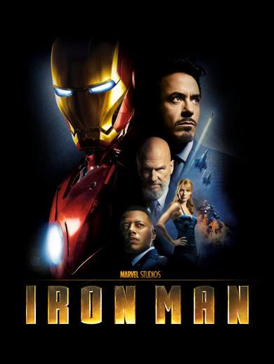
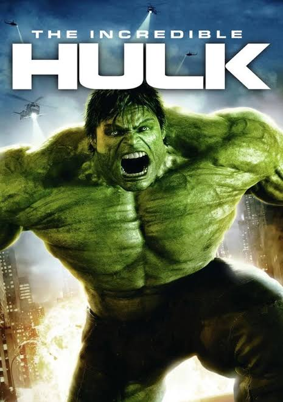
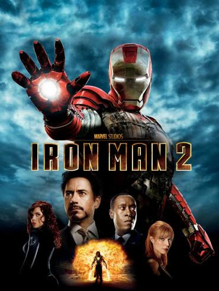
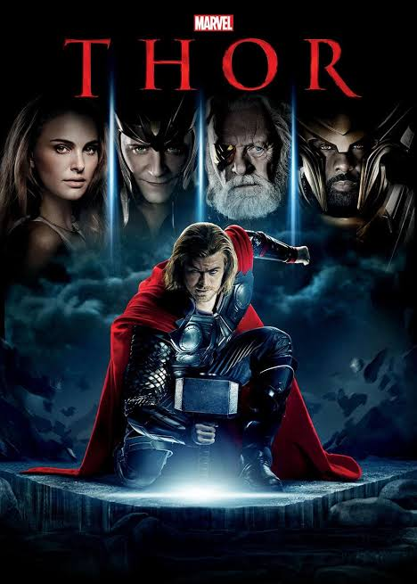
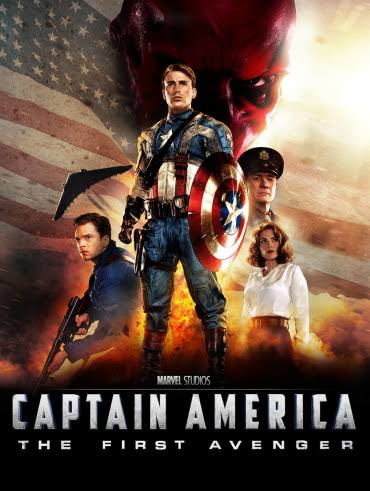
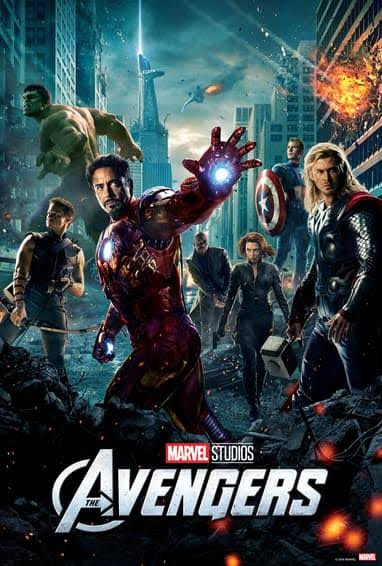

Iron Man (2008)
World famous industrialist and master engineer Tony Stark got
critically wounded after being attacked by a terrorist group.
Following his escape from them, Tony builds an Arc reactor and a
mechanized suit of armor and becomes the superhero Iron Man. Watch the
movie to know more...

The Incredible Hulk (2008)
Bruce Banner becomes the Hulk as an unwitting pawn in a military
scheme to reinvigorate the "Super-Soldier" program through gamma
radiation. Banner goes on the run from the military while attempting
to cure himself of the Hulk. Watch the movie to know more...

Iron Man 2 (2010)
Tony Stark resists calls from the US government to hand over the Iron
Man technology. Meanwhile, Russian scientist Ivan Vanko uses his own version
of the technology to pursue a vendetta against the Stark family.
Watch the movie to know more...

Thor (2011)
After reigniting a dormant war, Thor is banished from Asgard to Earth,
stripped of his powers and his hammer Mjölnir. As his brother Loki
(Hiddleston) plots to take the Asgardian throne, Thor must prove
himself worthy. Watch the movie to know more...

Captain America: The First Avenger (2011)
During World War II, Steve Rogers, a frail man, is transformed into
the super-soldier Captain America and must stop the Red Skull
(Weaving) from using the Tesseract as an energy source for world
domination. Watch the movie to know more...

The Avengers (2012)
Nick Fury and the spy agency S.H.I.E.L.D. recruit Tony Stark, Steve
Rogers, Bruce Banner, Thor, Natasha Romanoff, and Clint Barton to form
a team capable of stopping Thor's brother Loki from subjugating Earth.
Watch the movie to know more...